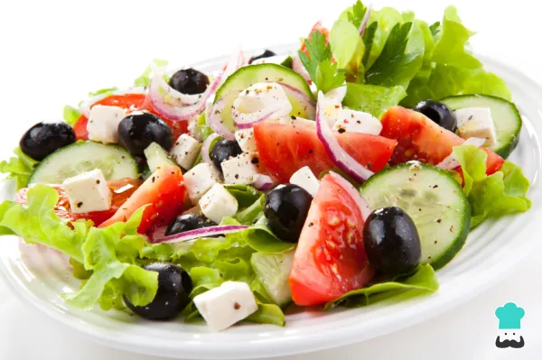

Ensalada casera
Ensalada un plato delicioso. Lo escogi por que es una comida saludable

Igrendientes
- 4 unidades de Tomates enteros.
- 1 unidad de Lechuga entera .
- 2 unidades de Pepinos.
- 1 pizca de Pimienta.
- 1 pizca de Sal.
- 100 gramos de Queso feta.
- 10 unidades de Aceituna.
- Olivas
Pasos
- Cortar los tomates en triángulos.
- Luego lavar bien la lechuga y cortar en pedazos pequenos.
- El pepino pelar y cortar en rodajas.
- Luego de todo esto revolver todo y agregar sal y pimienta..
- queso feta en taquitos.
- olivas.
- un poco de aceite.
- vinagre o aderezo..
- .